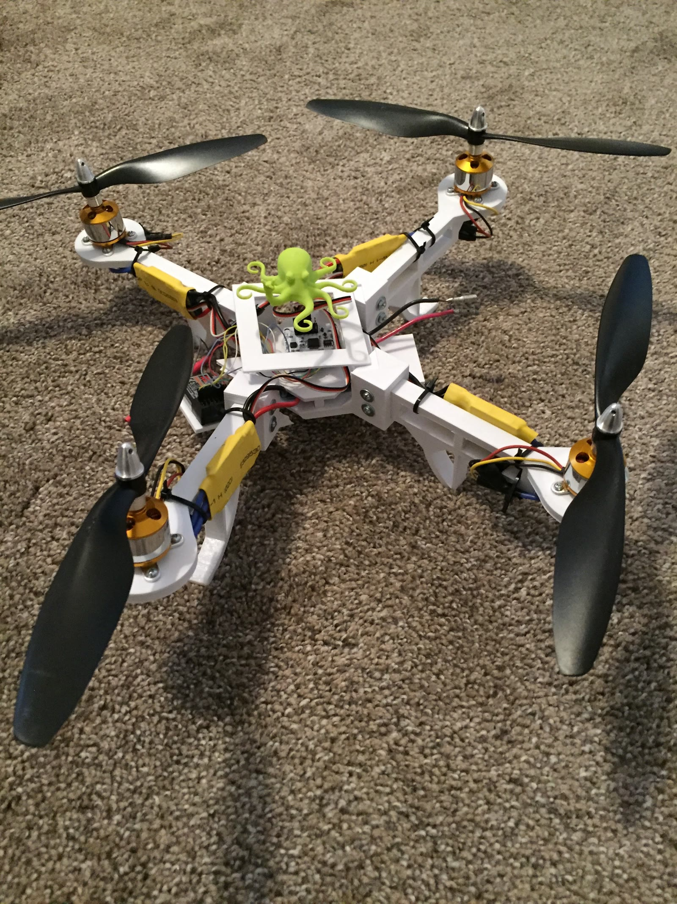
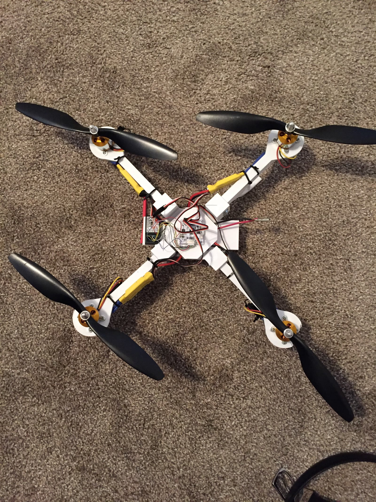
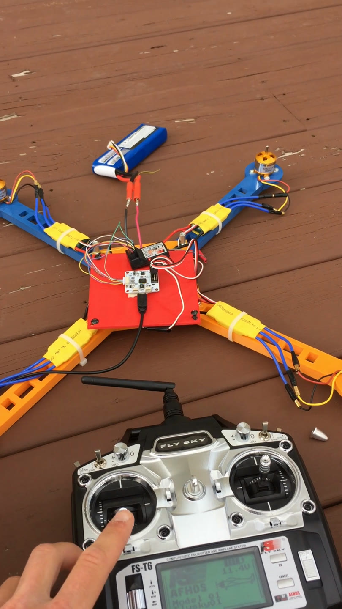

Quadcopter
A quadcopter built from scratch for the Penn Yan Academy engineering club. I won a grant from the school to buy the parts (motors, speed controllers, flight electronics), then designed and 3D-printed the frame myself.
The first version (2017) was flown with an RC transmitter; the second (2018) has a white printed frame with landing legs, topped with a green octopus.


